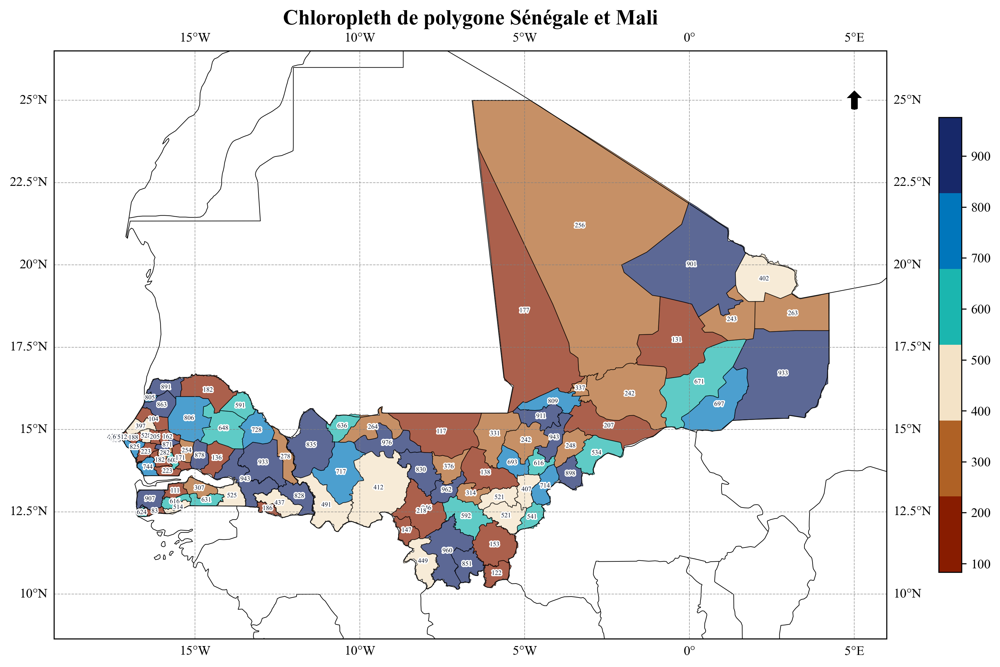

# Importation
from cartograpy import data
client = data.GeoBoundaries()Mapping in Python, the way it was always meant to be.
1 PRESENTATION
Cartograpy est un package python qui permet de manipuler des données geographiques et de creer des cartes simplement.
.png)
And you have all you need !
2 FONCTIONNALITE
- Telecharger des données de découpage administratif de pays
- Importer des données de types vectorielles et matricielles
- Faire des traitement sur les données geospatiales importé
- Creer des cartes et les personnaliser simplement
3 INSTALLATION
Pour installer le package cartograpy, vous pouvez utiliser pip. Ouvrez votre terminal ou invite de commande et exécutez la commande suivante :
pip install cartograpy4 UTILISATION
4.1 Obtension de données géographiques
4.1.1 Récupérer les limites administratives d’un ou plusieurs pays
Les niveau de subbdivision administrative disponibles sont :
Il existe 5 subdivisions administratives disponibles :
print(client.adminLevels())
| Niveau GeoBoundaries | Nom commun (FR) | Nom commun (EN) |
| -------------------- | ------------------------- | --------------------- |
| ADM0 | Pays | Country |
| ADM1 | Région / État / Province | State / Region |
| ADM2 | Département / District | District / County |
| ADM3 | Sous-préfecture / Commune | Subdistrict / Commune |
| ADM4 | Village / Localité | Village / Locality |
| ADM5 | Quartier / Secteur | Neighborhood / Sector |
Remarques importantes :
- Le nombre de niveaux dépend du pays. Certains pays s’arrêtent à ADM2, d’autres vont jusqu’à ADM4 ou ADM5.
- Le nom réel des subdivisions varie d’un pays à l’autre (ex : “State”, “Region”, “Province”, “Department”, etc.).
- GeoBoundaries propose toujours au moins le niveau ADM0 (frontière nationale).
Pour savoir si un niveau administratif est disponible pour un pays, vous pouvez utiliser la méthode
is_valid_adm de l’objet GeoBoundaries. Voici un exemple :
print(client.is_valid_adm("CIV","ADM1")) # Exemple pour vérifier si le niveau ADM1 est valide pour la Côte d'Ivoire
# Ou encore
print(client._get_smallest_adm("CIV")) # Exemple pour vérifier si le niveau admin minimum pour la Côte d'IvoireTrue
Smallest ADM level found for CIV : ADM3
ADM3Les codes des pays sont conformes à la norme ISO 3166-1 alpha-3 :
Pour obtenir la liste des pays valides, vous pouvez utiliser la méthode countries() de
l’objet GeoBoundaries. Voici un exemple :
client.countries()[0:10] # Affiche les 10 premiers pays['أفغانستان',
'афганистан',
'afghánistán',
'afghanistan',
'αφγανιστάν',
'afganio',
'afganistán',
'afganistan',
'afganisztán',
'աֆղանստան']client.get_iso3("burk")'BFA'client.get_iso3("con") # Exemple pour obtenir le code ISO d'un pays[('congo', 'cog'),
('república del congo', 'cog'),
('république du congo', 'cog'),
('rep. del congo', 'cog'),
('congo-brazzaville', 'cog'),
('república do congo', 'cog'),
('demokratiske republik congo', 'cod'),
('congo, democratic republic of the', 'cod'),
('república democrática del congo', 'cod'),
('république démocratique du congo', 'cod'),
('rd del congo', 'cod'),
('congo-kinshasa', 'cod'),
('república democrática do congo', 'cod'),
('republica democrată congo', 'cod')]
# Exemple 1: Récupérer les données administratives des régions de la cote d'ivoire
civ_data = client.adm("CIV", "ADM2")
civ_data.head()| geometry | shapeName | shapeISO | shapeID | shapeGroup | shapeType | |
|---|---|---|---|---|---|---|
| 0 | POLYGON ((-4.68451 6.27179, -4.6868 6.26883, -... | Agneby-Tiassa | 98640826B52449815511854 | CIV | ADM2 | |
| 1 | POLYGON ((-7.71925 9.07004, -7.72574 9.06397, ... | Bafing | 98640826B37750272367318 | CIV | ADM2 | |
| 2 | POLYGON ((-6.19702 10.24246, -6.20038 10.24495... | Bagoue | 98640826B26044148659027 | CIV | ADM2 | |
| 3 | MULTIPOLYGON (((-4.68451 6.27179, -4.68338 6.2... | Belier | 98640826B5123145245776 | CIV | ADM2 | |
| 4 | POLYGON ((-6.70042 9.06196, -6.70118 9.05639, ... | Bere | 98640826B43857880322183 | CIV | ADM2 |
# Exemple 2 : Récupérer les limites administratives de plusieurs pays (senegal et mali ici)
countries_data = client.adm(["SEN", "mali"], "ADM2")
countries_data["mali"].head()| geometry | shapeName | shapeISO | shapeID | shapeGroup | shapeType | |
|---|---|---|---|---|---|---|
| 0 | POLYGON ((-7.92938 12.68171, -7.93554 12.68821... | Bamako | 8926073B70420899930674 | MLI | ADM2 | |
| 1 | POLYGON ((1.32448 16.90639, 1.03227 16.61402, ... | Ansongo | 8926073B56917716124995 | MLI | ADM2 | |
| 2 | POLYGON ((1.17767 17.69958, 1.15458 17.70648, ... | Bourem | 8926073B86504284097699 | MLI | ADM2 | |
| 3 | POLYGON ((1.32448 16.90639, 1.65353 17.5735, 1... | Gao | 8926073B84061132695750 | MLI | ADM2 | |
| 4 | POLYGON ((1.31144 15.27381, 1.4716 15.28167, 1... | Menaka | 8926073B3742503303790 | MLI | ADM2 |
4.1.2 Récupérer les métadonnées d’un territoire
# Récupérer les métadonnées d'un territoire
metadata_civ = client.metadata("CIV", "ADM0")
print(f"Métadonnées disponibles pour la Côte d'Ivoire: {metadata_civ.keys()}")Métadonnées disponibles pour la Côte d'Ivoire: dict_keys(['boundaryID', 'boundaryName', 'boundaryISO', 'boundaryYearRepresented', 'boundaryType', 'boundaryCanonical', 'boundarySource', 'boundaryLicense', 'licenseDetail', 'licenseSource', 'boundarySourceURL', 'sourceDataUpdateDate', 'buildDate', 'Continent', 'UNSDG-region', 'UNSDG-subregion', 'worldBankIncomeGroup', 'admUnitCount', 'meanVertices', 'minVertices', 'maxVertices', 'meanPerimeterLengthKM', 'minPerimeterLengthKM', 'maxPerimeterLengthKM', 'meanAreaSqKM', 'minAreaSqKM', 'maxAreaSqKM', 'staticDownloadLink', 'gjDownloadURL', 'tjDownloadURL', 'imagePreview', 'simplifiedGeometryGeoJSON'])metadata_civ["Continent"]'Africa'metadata_civ["UNSDG-subregion"]'Western Africa'metadata_civ["UNSDG-region"]'Sub-Saharan Africa'url_img=metadata_civ["imagePreview"]
url_img'https://github.com/wmgeolab/geoBoundaries/raw/9469f09/releaseData/gbOpen/CIV/ADM0/geoBoundaries-CIV-ADM0-PREVIEW.png'# Afficher l'image de prévisualisation dans le notebook
from IPython.display import Image, display
try :
display(Image(url=url_img))
except :
print("Impossible d'afficher l'image.")
4.1.3 Géocoder une ou plusieurs adresses
Le geocodage permet de convertir des adresses en coordonnées géographiques (latitude et longitude). Vous
pouvez géocoder une ou plusieurs adresses en utilisant les méthode geocode et
geocode_batch de l’objet Geocoder.
from cartograpy import data
geocoder= data.Geocoder()Géocoder une adresse
address = "bouaké"
result = geocoder.geocode(address)
# Adresse trouvée
result[0]Début du géocodage de 1 localité(s)...
Géocodage terminé.| query | address | latitude | longitude | altitude | raw | geometry | |
|---|---|---|---|---|---|---|---|
| 0 | bouaké | Bouaké, Gbêkê, Vallée du Bandama, Côte d’Ivoire | 7.689021 | -5.028355 | 0.0 | {'place_id': 277285966, 'licence': 'Data © Ope... | POINT (-5.02836 7.68902) |
# Adresse non trouvée
result[1][]Geocoder une liste d’adresses
liste_adresses = ["Abidjan", "Yamoussoukro", "Bouaké", "Korhogo","Man CI", "","portbouet"]
results=geocoder.geocode(liste_adresses)
# Adresses trouvées
results[0]Début du géocodage de 7 localité(s)...
Géocodage terminé.| query | address | latitude | longitude | altitude | raw | geometry | |
|---|---|---|---|---|---|---|---|
| 0 | Abidjan | Abidjan, Le Plateau, Abidjan, Côte d’Ivoire | 5.320357 | -4.016107 | 0.0 | {'place_id': 277113208, 'licence': 'Data © Ope... | POINT (-4.01611 5.32036) |
| 1 | Yamoussoukro | Yamoussoukro, Côte d’Ivoire | 6.820007 | -5.277603 | 0.0 | {'place_id': 405157296, 'licence': 'Data © Ope... | POINT (-5.2776 6.82001) |
| 2 | Bouaké | Bouaké, Gbêkê, Vallée du Bandama, Côte d’Ivoire | 7.689021 | -5.028355 | 0.0 | {'place_id': 277285966, 'licence': 'Data © Ope... | POINT (-5.02836 7.68902) |
| 3 | Korhogo | Korhogo, Poro, Savanes, Côte d’Ivoire | 9.458070 | -5.631629 | 0.0 | {'place_id': 277168989, 'licence': 'Data © Ope... | POINT (-5.63163 9.45807) |
| 4 | Man CI | Man, Tonkpi, Montagnes, Côte d’Ivoire | 7.410258 | -7.550372 | 0.0 | {'place_id': 276691276, 'licence': 'Data © Ope... | POINT (-7.55037 7.41026) |
# Adresses non trouvée
results[1]['', 'portbouet']4.2 Processing de données
processing vous permet d’executer des taches courantes effectuées sur des données
vectorielles.
# Importation
from cartograpy.processing import *4.2.1 Charger des données
# hexagon_data=load("data\other\hexagon 0.2_Jointure data raster.geojson")
# hexagon_data.head()path="data\other\Département de Bouna.geojson"
donnee_bouna=load(path)
donnee_bouna.head()<>:1: SyntaxWarning: invalid escape sequence '\o'
<>:1: SyntaxWarning: invalid escape sequence '\o'
C:\Users\kanic\AppData\Local\Temp\ipykernel_13180\847831339.py:1: SyntaxWarning: invalid escape sequence '\o'
path="data\other\Département de Bouna.geojson"| id | Name | description | timestamp | begin | end | altitudeMode | tessellate | extrude | visibility | drawOrder | icon | snippet | geometry | |
|---|---|---|---|---|---|---|---|---|---|---|---|---|---|---|
| 0 | ID_00022 | Bouna | <html xmlns:fo="http://www.w3.org/1999/XSL/For... | None | None | None | clampToGround | -1 | 0 | -1 | None | None | MULTIPOLYGON Z (((-4.19952 9.61499 0, -4.209 9... |
4.2.2 Obtenir des informations sur un multipolygone
multipolygon=donnee_bouna["geometry"][0]
infos_multipolygon=get_multipolygon_info(multipolygon)
infos_multipolygon{'type': 'MultiPolygon',
'num_polygons': 1,
'total_area': 1.1852617495377915,
'bounds': (-4.297637881999947,
8.508406537000042,
-2.596283662999952,
9.616030601000034),
'areas': [1.1852617495377915],
'largest_polygon_area': 1.1852617495377915,
'smallest_polygon_area': 1.1852617495377915}4.2.3 Séparer un multipolygon en polygone simple
polygones_bouna=split_multipolygon(donnee_bouna)
polygones_bouna.head()| id | Name | description | timestamp | begin | end | altitudeMode | tessellate | extrude | visibility | drawOrder | icon | snippet | geometry | original_index | polygon_part | |
|---|---|---|---|---|---|---|---|---|---|---|---|---|---|---|---|---|
| 0 | ID_00022 | Bouna | <html xmlns:fo="http://www.w3.org/1999/XSL/For... | None | None | None | clampToGround | -1 | 0 | -1 | None | None | POLYGON Z ((-4.19952 9.61499 0, -4.209 9.61568... | 0 | 0 |
polygones_bouna.plot()
4.2.4 Fusionner des geodataframe
# Exemple 2 : Récupérer les limites administratives de plusieurs pays (senegal et mali ici)
countries_data = client.adm(["SEN", "mali","civ"], "ADM2")
list_gdf=[gdf for key, gdf in countries_data.items()] # Liste de dataframes
countries_merged_data=fusion(list_gdf) # Fusion des dataframes
countries_merged_data.head()| geometry | shapeName | shapeISO | shapeID | shapeGroup | shapeType | |
|---|---|---|---|---|---|---|
| 0 | POLYGON ((-11.88782 13.38481, -11.88765 13.391... | Bakel | 50182788B16013842146029 | SEN | ADM2 | |
| 1 | POLYGON ((-16.38592 15.02258, -16.40452 15.023... | Bambey | 50182788B75300917140294 | SEN | ADM2 | |
| 2 | POLYGON ((-15.9775 12.88596, -15.97446 12.8904... | Bignona | 50182788B19391387689457 | SEN | ADM2 | |
| 3 | POLYGON ((-15.59024 13.8291, -15.58246 13.8437... | Birkelane | 50182788B56779252201559 | SEN | ADM2 | |
| 4 | POLYGON ((-15.9775 12.88596, -15.97 12.89171, ... | Bounkiling | 50182788B68388966372963 | SEN | ADM2 |
4.2.5 Creer une nouvelle colonne
new_countries_data=add_column(df=countries_merged_data,column_name="random_data",expression="random.randint(1,100)",globals_dict={"random":random})
# global_dics correspond a la liste des packages necessaires pour evaluer l'expression
new_countries_data.head()| geometry | shapeName | shapeISO | shapeID | shapeGroup | shapeType | random_data | |
|---|---|---|---|---|---|---|---|
| 0 | POLYGON ((-11.88782 13.38481, -11.88765 13.391... | Bakel | 50182788B16013842146029 | SEN | ADM2 | 30 | |
| 1 | POLYGON ((-16.38592 15.02258, -16.40452 15.023... | Bambey | 50182788B75300917140294 | SEN | ADM2 | 4 | |
| 2 | POLYGON ((-15.9775 12.88596, -15.97446 12.8904... | Bignona | 50182788B19391387689457 | SEN | ADM2 | 25 | |
| 3 | POLYGON ((-15.59024 13.8291, -15.58246 13.8437... | Birkelane | 50182788B56779252201559 | SEN | ADM2 | 11 | |
| 4 | POLYGON ((-15.9775 12.88596, -15.97 12.89171, ... | Bounkiling | 50182788B68388966372963 | SEN | ADM2 | 64 |
new_countries_data=add_column(new_countries_data,"dataType","row['shapeGroup']+'-'+row['shapeType']")
# row dans l'expression correspont a une ligne de la dataframe
# shapeGroup et shapeType sont des colonnes de la dataframe
new_countries_data.head()| geometry | shapeName | shapeISO | shapeID | shapeGroup | shapeType | random_data | dataType | |
|---|---|---|---|---|---|---|---|---|
| 0 | POLYGON ((-11.88782 13.38481, -11.88765 13.391... | Bakel | 50182788B16013842146029 | SEN | ADM2 | 30 | SEN-ADM2 | |
| 1 | POLYGON ((-16.38592 15.02258, -16.40452 15.023... | Bambey | 50182788B75300917140294 | SEN | ADM2 | 4 | SEN-ADM2 | |
| 2 | POLYGON ((-15.9775 12.88596, -15.97446 12.8904... | Bignona | 50182788B19391387689457 | SEN | ADM2 | 25 | SEN-ADM2 | |
| 3 | POLYGON ((-15.59024 13.8291, -15.58246 13.8437... | Birkelane | 50182788B56779252201559 | SEN | ADM2 | 11 | SEN-ADM2 | |
| 4 | POLYGON ((-15.9775 12.88596, -15.97 12.89171, ... | Bounkiling | 50182788B68388966372963 | SEN | ADM2 | 64 | SEN-ADM2 |
list(new_countries_data.columns)['geometry',
'shapeName',
'shapeISO',
'shapeID',
'shapeGroup',
'shapeType',
'random_data',
'dataType']4.2.6 Creer un geodataframe de centroïde
coundtries_centroids = centroids(new_countries_data)
# Maintenant coundtries_centroids est un GeoDataFrame de points (centroïdes)
# avec tous les attributs originaux de new_countries_data
coundtries_centroids.head()| geometry | shapeName | shapeISO | shapeID | shapeGroup | shapeType | random_data | dataType | |
|---|---|---|---|---|---|---|---|---|
| 0 | POINT (-12.25523 14.17004) | Bakel | 50182788B16013842146029 | SEN | ADM2 | 30 | SEN-ADM2 | |
| 1 | POINT (-16.48386 14.80261) | Bambey | 50182788B75300917140294 | SEN | ADM2 | 4 | SEN-ADM2 | |
| 2 | POINT (-16.36673 12.88758) | Bignona | 50182788B19391387689457 | SEN | ADM2 | 25 | SEN-ADM2 | |
| 3 | POINT (-15.68446 14.05259) | Birkelane | 50182788B56779252201559 | SEN | ADM2 | 11 | SEN-ADM2 | |
| 4 | POINT (-15.60351 13.13488) | Bounkiling | 50182788B68388966372963 | SEN | ADM2 | 64 | SEN-ADM2 |
# Visualisation simple avec matplotlib
coundtries_centroids.plot(markersize=50, color='red',label="Centroïde")4.3 Visualisation de données
cartograpy permet de creer rapidement des cartes pour visualier les données géographiques.
from cartograpy.mapper import *# J'ajoute des données aléatoires pour la visualisation
import random
civ_data['data'] = [random.randint(0,10000) for i in range(len(civ_data))]civ_data.head()| geometry | shapeName | shapeISO | shapeID | shapeGroup | shapeType | data | |
|---|---|---|---|---|---|---|---|
| 0 | POLYGON ((-4.68451 6.27179, -4.6868 6.26883, -... | Agneby-Tiassa | 98640826B52449815511854 | CIV | ADM2 | 4759 | |
| 1 | POLYGON ((-7.71925 9.07004, -7.72574 9.06397, ... | Bafing | 98640826B37750272367318 | CIV | ADM2 | 8688 | |
| 2 | POLYGON ((-6.19702 10.24246, -6.20038 10.24495... | Bagoue | 98640826B26044148659027 | CIV | ADM2 | 6097 | |
| 3 | MULTIPOLYGON (((-4.68451 6.27179, -4.68338 6.2... | Belier | 98640826B5123145245776 | CIV | ADM2 | 6571 | |
| 4 | POLYGON ((-6.70042 9.06196, -6.70118 9.05639, ... | Bere | 98640826B43857880322183 | CIV | ADM2 | 1428 |
geocode_localite=results[0]
geocode_localite["data"]= [random.randint(0,10000) for i in range(len(geocode_localite))]
geocode_localite.head()| query | address | latitude | longitude | altitude | raw | geometry | data | |
|---|---|---|---|---|---|---|---|---|
| 0 | Abidjan | Abidjan, Le Plateau, Abidjan, Côte d’Ivoire | 5.320357 | -4.016107 | 0.0 | {'place_id': 277113208, 'licence': 'Data © Ope... | POINT (-4.01611 5.32036) | 9682 |
| 1 | Yamoussoukro | Yamoussoukro, Côte d’Ivoire | 6.820007 | -5.277603 | 0.0 | {'place_id': 405157296, 'licence': 'Data © Ope... | POINT (-5.2776 6.82001) | 4465 |
| 2 | Bouaké | Bouaké, Gbêkê, Vallée du Bandama, Côte d’Ivoire | 7.689021 | -5.028355 | 0.0 | {'place_id': 277285966, 'licence': 'Data © Ope... | POINT (-5.02836 7.68902) | 4571 |
| 3 | Korhogo | Korhogo, Poro, Savanes, Côte d’Ivoire | 9.458070 | -5.631629 | 0.0 | {'place_id': 277168989, 'licence': 'Data © Ope... | POINT (-5.63163 9.45807) | 1753 |
| 4 | Man CI | Man, Tonkpi, Montagnes, Côte d’Ivoire | 7.410258 | -7.550372 | 0.0 | {'place_id': 276691276, 'licence': 'Data © Ope... | POINT (-7.55037 7.41026) | 3365 |
4.3.1 Voir la liste des palletes de couleurs diponible
# Les groupes de palettes diponibles
get_available_palettes().keys()dict_keys(['custom', 'seaborn_qualitative', 'seaborn_sequential', 'seaborn_diverging', 'matplotlib_sequential', 'matplotlib_diverging', 'matplotlib_cyclic', 'matplotlib_qualitative'])# Voir les pallettes disponibles dans un groupe
get_available_palettes()["seaborn_sequential"]['Blues',
'BuGn',
'BuPu',
'GnBu',
'Greens',
'Greys',
'Oranges',
'OrRd',
'PuBu',
'PuBuGn',
'PuRd',
'Purples',
'RdPu',
'Reds',
'YlGn',
'YlGnBu',
'YlOrBr',
'YlOrRd',
'rocket',
'mako',
'flare',
'crest']4.3.2 Voir la liste des polices d’écritures disponibles
get_fonts()[0:10] # Pour voir les 10 prémières polices ['Agency FB',
'Algerian',
'Arial',
'Arial Rounded MT Bold',
'Bahnschrift',
'Baskerville Old Face',
'Bauhaus 93',
'Bell MT',
'Berlin Sans FB',
'Berlin Sans FB Demi']# Pour filtrer par un mot clé
get_fonts("time")[0]'Times New Roman'4.3.3 Visualiser des données vectorielles
Creer une carte cloropleth simple
carte_ci=Map(figsize=(16, 12), projection=ccrs.PlateCarree())
carte_ci.add_polygons_cloropleth(gdf=civ_data,
column_to_plot='data',
title='Légende',
cmap='tab20c',
)
carte_ci.add_points_cloropleth(
gdf=geocode_localite,
column_to_plot="data",
label_column="query",
point_size_column="data",
show_colorbar=False,
cmap="tab20c"
)
carte_ci.add_gridlines()
font_name=get_fonts("time")[0]
font_name
carte_ci.set_font(font_name, size=12)
carte_ci.add_arrow(3, position=(-2.5,10.75),zoom=0.06, color="black")
carte_ci.figsize=(18,16)Warning: No CRS defined for geodf. Setting default CRS to EPSG:4326c:\Users\kanic\OneDrive\cartograpy\cartograpy\mapper.py:1544: MatplotlibDeprecationWarning: The get_cmap function was deprecated in Matplotlib 3.7 and will be removed in 3.11. Use ``matplotlib.colormaps[name]`` or ``matplotlib.colormaps.get_cmap()`` or ``pyplot.get_cmap()`` instead.
cmap_obj = plt.cm.get_cmap(cmap)
c:\Users\kanic\OneDrive\cartograpy\cartograpy\mapper.py:1716: MatplotlibDeprecationWarning: The get_cmap function was deprecated in Matplotlib 3.7 and will be removed in 3.11. Use ``matplotlib.colormaps[name]`` or ``matplotlib.colormaps.get_cmap()`` or ``pyplot.get_cmap()`` instead.
cmap_obj = plt.cm.get_cmap(cmap)
Can't handle color: param(outline)
Can't handle color: param(outline)📊 Centrage intelligent appliqué:
Format: Personnalisé (N/A)
Ratio figure: 1.33
Ratio données: 0.95
Étendue: [-10.39, -0.69, 3.91, 11.19]
📊 Centrage intelligent appliqué:
Format: Personnalisé (N/A)
Ratio figure: 1.33
Ratio données: 0.95
Étendue: [-10.39, -0.69, 3.91, 11.19]4.3.4 Visualiser des données rasters
# Création d'une carte raster
carte_dem = Map(figsize=(12, 8), projection=ccrs.PlateCarree())
# Ajout d'une couche raster
carte_dem.add_raster('data\other\Limite DEM Bouna.tif', cmap='tab20c', title='Élévation (m)')
font_name=get_fonts("couri")[0]
carte_dem.set_font(font_name, size=12)
carte_dem.set_title('Topographique de bouna', fontsize=20, color='Black', pad=20)
carte_dem.add_arrow(3, position=(-2.70, 9.55), zoom=0.05, color='black')
carte_dem.add_gridlines()
carte_dem.add_scale_bar(length=20, units="km",pad=0.01)
carte_dem.show()
# Sauvegarde
# carte.save('carte_demo.png')<>:5: SyntaxWarning: invalid escape sequence '\o'
<>:5: SyntaxWarning: invalid escape sequence '\o'
C:\Users\kanic\AppData\Local\Temp\ipykernel_13180\1404476908.py:5: SyntaxWarning: invalid escape sequence '\o'
carte_dem.add_raster('data\other\Limite DEM Bouna.tif', cmap='tab20c', title='Élévation (m)')
Can't handle color: param(outline)
Can't handle color: param(outline)Location est : (0.1, 0.05). La bare d'échelle est placé à 10.0 % de la longeur et à 5.0 % de la hauteur)civ_data.head()| geometry | shapeName | shapeISO | shapeID | shapeGroup | shapeType | data | |
|---|---|---|---|---|---|---|---|
| 0 | POLYGON ((-4.68451 6.27179, -4.6868 6.26883, -... | Agneby-Tiassa | 98640826B52449815511854 | CIV | ADM2 | 4759 | |
| 1 | POLYGON ((-7.71925 9.07004, -7.72574 9.06397, ... | Bafing | 98640826B37750272367318 | CIV | ADM2 | 8688 | |
| 2 | POLYGON ((-6.19702 10.24246, -6.20038 10.24495... | Bagoue | 98640826B26044148659027 | CIV | ADM2 | 6097 | |
| 3 | MULTIPOLYGON (((-4.68451 6.27179, -4.68338 6.2... | Belier | 98640826B5123145245776 | CIV | ADM2 | 6571 | |
| 4 | POLYGON ((-6.70042 9.06196, -6.70118 9.05639, ... | Bere | 98640826B43857880322183 | CIV | ADM2 | 1428 |
list(civ_data.shapeName.unique())[0:10]['Agneby-Tiassa',
'Bafing',
'Bagoue',
'Belier',
'Bere',
'Bounkani',
'Cavally',
"District Autonome D'Abidjan",
'District Autonome De Yamoussoukro',
'Folon']civ_data["shapeName"].replace({
"District Autonome D'Abidjan": "Abidjan",
"District Autonome De Yamoussoukro": "Yamoussoukro"
}, inplace=True)C:\Users\kanic\AppData\Local\Temp\ipykernel_13180\1025282276.py:1: FutureWarning: A value is trying to be set on a copy of a DataFrame or Series through chained assignment using an inplace method.
The behavior will change in pandas 3.0. This inplace method will never work because the intermediate object on which we are setting values always behaves as a copy.
For example, when doing 'df[col].method(value, inplace=True)', try using 'df.method({col: value}, inplace=True)' or df[col] = df[col].method(value) instead, to perform the operation inplace on the original object.
civ_data["shapeName"].replace({geocode_localite.head()| query | address | latitude | longitude | altitude | raw | geometry | data | |
|---|---|---|---|---|---|---|---|---|
| 0 | Abidjan | Abidjan, Le Plateau, Abidjan, Côte d’Ivoire | 5.320357 | -4.016107 | 0.0 | {'place_id': 277113208, 'licence': 'Data © Ope... | POINT (-4.01611 5.32036) | 9682 |
| 1 | Yamoussoukro | Yamoussoukro, Côte d’Ivoire | 6.820007 | -5.277603 | 0.0 | {'place_id': 405157296, 'licence': 'Data © Ope... | POINT (-5.2776 6.82001) | 4465 |
| 2 | Bouaké | Bouaké, Gbêkê, Vallée du Bandama, Côte d’Ivoire | 7.689021 | -5.028355 | 0.0 | {'place_id': 277285966, 'licence': 'Data © Ope... | POINT (-5.02836 7.68902) | 4571 |
| 3 | Korhogo | Korhogo, Poro, Savanes, Côte d’Ivoire | 9.458070 | -5.631629 | 0.0 | {'place_id': 277168989, 'licence': 'Data © Ope... | POINT (-5.63163 9.45807) | 1753 |
| 4 | Man CI | Man, Tonkpi, Montagnes, Côte d’Ivoire | 7.410258 | -7.550372 | 0.0 | {'place_id': 276691276, 'licence': 'Data © Ope... | POINT (-7.55037 7.41026) | 3365 |
font=get_fonts("time")[0]
font'Times New Roman'
# Creer un objet de carte basique avec OpenLayers et Python
# =========================================================
carte1=Map(figsize="A4",title="Carte de la Côte d'Ivoire")
# Ajouter des couches de données
# =========================================================
carte1.add_polygons(gdf=civ_data,label="Limite des régions")
carte1.add_points(gdf=geocode_localite,label="Zone d'enquête")
# Ajouter des etiquettes
# =========================================================
carte1.add_labels(
gdf=civ_data,
label_column='shapeName',
# custom_label="{row['data']}\n{row['shapeName']}", #Pour personnaliser l'affichage
fontsize=8,
# color="#e2f201",
outline_width=1,
fontweight="bold"
)
# Mofifier la tailles du papier en A4
# =========================================================
carte1.set_paper("A4")
# Ajouter les grilles de coordonnées
# =========================================================
carte1.add_gridlines(top_right=True,fontsize=12)
# Ajouter la légende
# =========================================================
carte1.legend_presets("simple", title="Légende", title_fontsize=12, fontsize=12,loc="lower right")
# Ajouter une barre d'echelle
# =========================================================
carte1.add_scale_bar(length=100, units="km", linewidth=4, location=(0.02,0.03))
# Ajouter la fleche du nord geographique
# =========================================================
carte1.add_arrow(arrow=3,position=(-0.5,11),zoom=0.05)
# Changer le style de police
# =========================================================
carte1.set_font(font)
# Afficher la carte
# =========================================================
carte1.show(smart_centering=True)
# Enregistrer la carte
# =========================================================
# carte1.save("image.png")Can't handle color: param(outline)
Can't handle color: param(outline)📄 Format de papier: A4 (landscape) - Dimensions: 210 x 297 mm - Figure: 11.7" x 8.3"
⚠️ Attention: Aucun CRS défini. Attribution du CRS par défaut: EPSG:4326
📄 Format mis à jour: A4 (landscape) - Dimensions: 210 x 297 mm - Figure: 11.7" x 8.3"
{'fontsize': 12, 'title_fontsize': 12, 'frameon': True, 'fancybox': True, 'shadow': False, 'framealpha': 1.0, 'facecolor': 'white', 'edgecolor': '#888', 'borderpad': 1.0, 'columnspacing': 2.0, 'title': 'Légende', 'loc': 'lower right'}
🛑Element de légende ajouté None
✅ Légende personnalisée créée avec 2 éléments
🎨 Préréglage 'simple' appliqué à la légende
📊 Centrage intelligent appliqué:
Format: A4 (landscape)
Ratio figure: 1.41
Ratio données: 0.95
Étendue: [-10.96, -0.12, 3.72, 11.38]
🛑Element de légende ajouté None
✅ Légende personnalisée créée avec 2 éléments
Location est : (0.02, 0.03). La bare d'échelle est placé à 2.0 % de la longeur et à 3.0 % de la hauteur)4.3.5 Carte cloropleth
# Creer un simple cloropleth de point
#============================================
carte2=Map(figsize="A4")
centroide=centroids(geodf=civ_data)
# civ_bound0=client.adm("civ","ADM0")
# carte2.add_polygons(civ_bound0)
carte2.add_points_cloropleth(gdf=centroide,column_to_plot="data",point_size_column="data",cmap="rainbow",alpha=1)
carte2.add_gridlines()
carte2.set_title("Cloropleth de point avec points")
carte2.show()📄 Format de papier: A4 (landscape) - Dimensions: 210 x 297 mm - Figure: 11.7" x 8.3"
Warning: No CRS defined for geodf. Setting default CRS to EPSG:4326
📊 Centrage intelligent appliqué:
Format: A4 (landscape)
Ratio figure: 1.41
Ratio données: 0.91
Étendue: [-9.82, -1.18, 4.50, 10.61]
📊 Centrage intelligent appliqué:
Format: A4 (landscape)
Ratio figure: 1.41
Ratio données: 0.91
Étendue: [-9.82, -1.18, 4.50, 10.61]c:\Users\kanic\OneDrive\cartograpy\cartograpy\mapper.py:1716: MatplotlibDeprecationWarning: The get_cmap function was deprecated in Matplotlib 3.7 and will be removed in 3.11. Use ``matplotlib.colormaps[name]`` or ``matplotlib.colormaps.get_cmap()`` or ``pyplot.get_cmap()`` instead.
cmap_obj = plt.cm.get_cmap(cmap)# Creer un cloropleth de polygone
#=================================================
# Creation de client geoboundaries
bound=data.GeoBoundaries()
# Téléchargement des données de découpage administrativve du mali et du sénégale
dic=bound.adm(["sen","mali"],adm="ADM2")
# Fusion des données du découpages administratif
data_sen_mali=fusion(dataframes_list=[dic["sen"],dic["mali"]])
data_sen_mali.head()| geometry | shapeName | shapeISO | shapeID | shapeGroup | shapeType | |
|---|---|---|---|---|---|---|
| 0 | POLYGON ((-11.88782 13.38481, -11.88765 13.391... | Bakel | 50182788B16013842146029 | SEN | ADM2 | |
| 1 | POLYGON ((-16.38592 15.02258, -16.40452 15.023... | Bambey | 50182788B75300917140294 | SEN | ADM2 | |
| 2 | POLYGON ((-15.9775 12.88596, -15.97446 12.8904... | Bignona | 50182788B19391387689457 | SEN | ADM2 | |
| 3 | POLYGON ((-15.59024 13.8291, -15.58246 13.8437... | Birkelane | 50182788B56779252201559 | SEN | ADM2 | |
| 4 | POLYGON ((-15.9775 12.88596, -15.97 12.89171, ... | Bounkiling | 50182788B68388966372963 | SEN | ADM2 |
Vous pouvez utiliser explorer et manipuler les palettes de couleurs avec
colors de cartograpy
# Chargement de la bibliothèque
from cartograpy import colors# Création d'une colonne de données aléatoire
data_sen_mali=add_column(df=data_sen_mali,column_name="data",expression="random.randint(50,1000)",globals_dict={"random": random})data_sen_mali.head()
| geometry | shapeName | shapeISO | shapeID | shapeGroup | shapeType | data | |
|---|---|---|---|---|---|---|---|
| 0 | POLYGON ((-11.88782 13.38481, -11.88765 13.391... | Bakel | 50182788B16013842146029 | SEN | ADM2 | 278 | |
| 1 | POLYGON ((-16.38592 15.02258, -16.40452 15.023... | Bambey | 50182788B75300917140294 | SEN | ADM2 | 528 | |
| 2 | POLYGON ((-15.9775 12.88596, -15.97446 12.8904... | Bignona | 50182788B19391387689457 | SEN | ADM2 | 907 | |
| 3 | POLYGON ((-15.59024 13.8291, -15.58246 13.8437... | Birkelane | 50182788B56779252201559 | SEN | ADM2 | 608 | |
| 4 | POLYGON ((-15.9775 12.88596, -15.97 12.89171, ... | Bounkiling | 50182788B68388966372963 | SEN | ADM2 | 111 |
# Création de carte cloropleth
carte3 = Map (figsize="A4",title="Chloropleth de polygone Sénégale et Mali")
carte3.add_polygons_cloropleth(gdf=data_sen_mali,column_to_plot="data",cmap="Coconut")
carte3.add_labels(gdf=data_sen_mali,label_column="data",fontsize=5)
carte3.add_gridlines()
carte3.add_arrow(1,position=(5,25),zoom=0.03)
carte3.set_font(get_fonts("time")[0])
carte3.show()📄 Format de papier: A4 (landscape) - Dimensions: 210 x 297 mm - Figure: 11.7" x 8.3"
Warning: No CRS defined for geodf. Setting default CRS to EPSG:4326c:\Users\kanic\OneDrive\cartograpy\cartograpy\mapper.py:1544: MatplotlibDeprecationWarning: The get_cmap function was deprecated in Matplotlib 3.7 and will be removed in 3.11. Use ``matplotlib.colormaps[name]`` or ``matplotlib.colormaps.get_cmap()`` or ``pyplot.get_cmap()`` instead.
cmap_obj = plt.cm.get_cmap(cmap)
Can't handle color: param(outline)📊 Centrage intelligent appliqué:
Format: A4 (landscape)
Ratio figure: 1.41
Ratio données: 1.47
Étendue: [-19.27, 5.99, 8.64, 26.50]
📊 Centrage intelligent appliqué:
Format: A4 (landscape)
Ratio figure: 1.41
Ratio données: 1.47
Étendue: [-19.27, 5.99, 8.64, 26.50]
4.3.6 Carte de ligne
path="data\\QGIS-Training-Data\\exercise_data\shapefile\\rivers.shp"
data_riviere=load(path)
carte4=Map(title="Carte de rivière")
carte4.set_paper("A5")
carte4.add_lines(data_riviere,color="blue",alpha=0.7,linewidth=1,linestyle="--")
carte4.add_gridlines()
carte4.add_arrow(5,position=(20.56,-33.32),zoom=0.03)
carte4.add_scale_bar(15,units="km", pad=0.01,color="black",linewidth=3, location=(0.05,0.05))
carte4.add_scale_bar(15,units="km", pad=0.01,color="red",linewidth=3, location=(0.15,0.05),label="")
carte4.add_legend_element("line",color="blue",label="Rivière", linestyle="--", linewidth=1)
carte4.legend_presets("minimal" ,loc="lower right")
carte4.show()<>:1: SyntaxWarning: invalid escape sequence '\s'
<>:1: SyntaxWarning: invalid escape sequence '\s'
C:\Users\kanic\AppData\Local\Temp\ipykernel_13180\2862275657.py:1: SyntaxWarning: invalid escape sequence '\s'
path="data\\QGIS-Training-Data\\exercise_data\shapefile\\rivers.shp"
Can't handle color: param(outline)📄 Format mis à jour: A5 (landscape) - Dimensions: 148 x 210 mm - Figure: 8.3" x 5.8"
⚠️ Attention: Le GeoDataFrame contient des géométries nulles qui seront ignorées
➕ Élément 'Rivière' ajouté à la légende
{'fontsize': 9, 'frameon': False, 'fancybox': False, 'shadow': False, 'framealpha': 1.0, 'handlelength': 1.5, 'handletextpad': 0.5, 'loc': 'lower right'}
🛑Element de légende ajouté None
✅ Légende personnalisée créée avec 1 éléments
🎨 Préréglage 'minimal' appliqué à la légende
📊 Centrage intelligent appliqué:
Format: A5 (landscape)
Ratio figure: 1.42
Ratio données: 1.70
Étendue: [19.06, 20.66, -34.39, -33.26]
🛑Element de légende ajouté None
✅ Légende personnalisée créée avec 1 éléments
Location est : (0.05, 0.05). La bare d'échelle est placé à 5.0 % de la longeur et à 5.0 % de la hauteur)
Location est : (0.15, 0.05). La bare d'échelle est placé à 15.0 % de la longeur et à 5.0 % de la hauteur)4.3.7 Ajouter des couches de tous les types
carte5=Map(figsize="A4",title="")
carte5.add_layer(data_sen_mali,label="Admin 1")
centroide_sen_mal=centroids(data_sen_mali)
carte5.add_layer(centroide_sen_mal,color="orange", label="Centroïde")
carte5.legend_presets(loc="lower right")
carte5.set_paper(paper_format="A4",orientation="portrait")
carte5.add_gridlines()
carte5.show()📄 Format de papier: A4 (landscape) - Dimensions: 210 x 297 mm - Figure: 11.7" x 8.3"
⚠️ Attention: Aucun CRS défini. Attribution du CRS par défaut: EPSG:4326
['Polygon' 'MultiPolygon']
⚠️ Attention: Aucun CRS défini. Attribution du CRS par défaut: EPSG:4326
['Point']
{'fontsize': 10, 'frameon': True, 'fancybox': True, 'shadow': True, 'framealpha': 0.9, 'facecolor': 'white', 'edgecolor': 'black', 'loc': 'lower right'}
🛑Element de légende ajouté None
✅ Légende personnalisée créée avec 2 éléments
🎨 Préréglage 'default' appliqué à la légende
📄 Format mis à jour: A4 (portrait) - Dimensions: 210 x 297 mm - Figure: 8.3" x 11.7"
📊 Centrage intelligent appliqué:
Format: A4 (portrait)
Ratio figure: 0.71
Ratio données: 1.47
Étendue: [-19.71, 6.42, -0.91, 36.05]
🛑Element de légende ajouté None
✅ Légende personnalisée créée avec 2 éléments